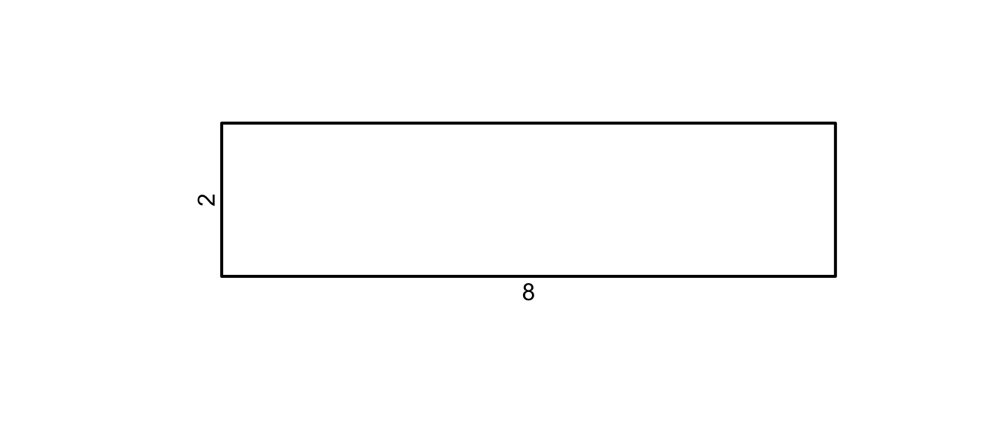
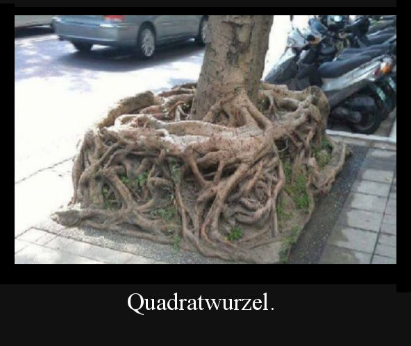
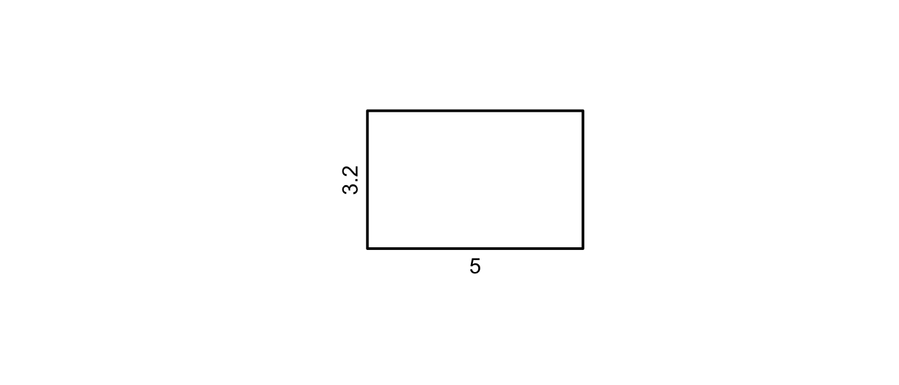
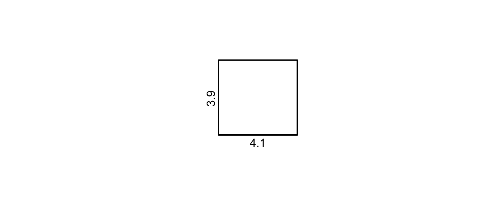
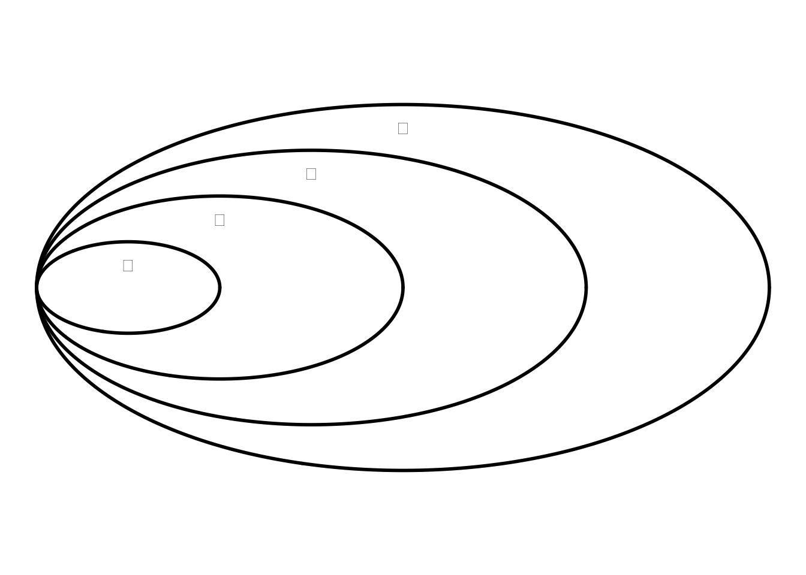

2 Quadratwurzel

2.1 Definition
Wir kennen bereits die vier Grundoperationen Addition, Subtraktion, Multiplikation und Division für die Zahlenmengen \(\mathbb{N}\), \(\mathbb{Z}\) und \(\mathbb{Q}\).
Wir möchten nun in selber Art und Weise eine Umkehrung für die Potenz finden. Betrachten wir nun folgende Gleichung:
\[ x^2 = 4 \]
Die Lösung dieser Gleichung definieren wir als die Quadratwurzel.
Spezialfälle
- \(\sqrt{1} = 1\): weil \(1^2 = 1\)
- \(\sqrt{0} = 0\): weil \(0^2 = 0\)
- \(\sqrt{a}\), mit \(a<0\): Nicht definiert!
2.1.1 Geometrische interpretation
Betrachten wir die Definition der Quadratwurzel geometrisch.
Wir haben ein Rechteck mit den Seitenlängen \(28cm\) und \(2cm\). Daraus möchten wir ein flächengleiches Quadrat machen.
Der Flächeninhalt des Rechtecks ist
\(28\cdot 2 = 56 cm^2\)
Welche Seitenlänge müsste ein Quadrat haben, damit seine Fläche auch \(56 cm^2\) beträgt? Nennen wir die Seitenlänge \(s\), gilt:
\(s\cdot s = s^2 = 56 cm^2\)
\(s = \sqrt{56}\)
Man kann also die Wurzel einer Zahl \(\sqrt{a}\) interpretieren als die Seitenlänge eines Quadrats mit Flächeninhalt \(a\).
Aufgaben lösen
Löse die Aufgaben zum Thema Einführung 1
2.2 Heron-Verfahren
Die Wurzel einer Quadratzahl ist relativ einfach durch raten zu bestimmen.
Sobald gilt \(\sqrt{a}\) mit \(a \in \mathbb{R^+}\) wird die Bestimmung durch raten etwas schwieriger. Und raten ist auch nicht besonders mathematisch (zugegebenermassen, wenn auch zur Not manchmal ganz praktisch).
Wir lernen nun also ein effizientes, numerisches Verfahren kennen, um die Wurzel aus einer Zahl bestimmen zu können.
Dazu nutzen wir die Idee, dass die Quadratwurzel einer Zahl \(a\) die Seitenlänge des Quadrates mit Flächeninhalt \(a\) ist. Wir nähern dieses Quadrat Schritt für Schritt mit Rechtecken an.
Beispiel Wir möchten \(\sqrt{16}\) mit dem Heron-Verfahren bestimmen. Dazu beginnen wir mit einem Reckteck der Seitenlängen \(8\) und \(2\).
Die Seitenlängen haben wir geschickt so gewählt, dass das Ergebnis irgendwo dazwischen liegen muss. Wir können entsprechende Schätzungen für ein Interval vornehmen, wenn das Ergebnis nicht ganz so klar ist. Die Fläche des Rechtecks muss dabei dem Radikanten entsprechen (in unserem Beispiel: \(8\cdot 2 = 16\)).
Als nächster Schritt möchten wir die Lange seite Verkürzen, aber ohne den Flächeninhalt zu verändern. Wir berechnen nun den Mittelwert der Seitenlänge: \((8+2) / 2 = 5\). Das ist eine Seitenlänge unseres nächsten Rechtecks.
Daraus können wir die zweite Seitenlänge bestimmen. Denn wir wissen, die Fläche muss \(16\) ergeben: \[ 5\cdot x = 16 \rightarrow x=\frac{16}{5}=3.2 \]

Das ist aber noch kein Quadrat. Daher wiederholen wie diese Schritte und verkleinern die längere Seite des Reckteckes, indem wir den Mittelwert beider Seiten berechnen: \[ \frac{5 + 3.2}{2} = 4.1 \]
Daraus bestimmen wir die zweite Seite des Rechteckes: \[ 16 = 4.1\cdot x \rightarrow x = \frac{16}{4.1} \approx 3.9 \]

Auch das ist noch immer kein Quadrat. Also, nochmals wiederholen: \[ \frac{4.1 + 3.9}{2} = 4 \]
Wir haben nun also unser Quadrat erreicht. Wir haben eine Seite \(=4\) und die andere Seite wäre ebenfalls nach dem selben Verfahren: \(16=x\cdot4 \rightarrow \frac{16}{4} = 4\).
Genauigkeit des Ergebnisses
Später in der Physik (Oder ganz speziell im Ingenieurswesen) ist es oftmals nicht das Ziel eine ‘perfekte’ Lösung zu erhalten, sondern eine, die unseren Ansprüchen genügt. Ich muss eine Quadratwurzel i.d.R. nicht auf 200 Stellen genau berechnen. Wir können die Genauigkeit in diesem Verfahren steuern, indem wir entscheiden, dass unsere Lösung genau genug ist und wiederholen die Schritte nicht weiter.
Achtung beim Runden
Ganz genau genommen haben wir mit der Rundung hier etwas ‘geschummelt’: \(\frac{16}{4.1} = 3.902439...\approx 3.9\). Wir haben einfach entschieden, dass \(3.9\) genügend genau ist.
In diesem Fall war es in Ordnung. Es bedarf aber immer grösster Vorsicht, mit gerundeten Werten weiterzurechnen! Die Fehler können sich in langen Rechnungen verschleppen und plötzlich riesig werden.
Aufgaben lösen
Löse die Aufgaben zum Thema Heron-Verfahren 2
2.3 Reelle Zahlen
Wir kennen nun bereits einige Zahlenmengen:
- Die natürlichen Zahlen \(\mathbb{N}\)
- Ganze (also ohne Kommastellen), positive Zahlen, ohne \(0 \rightarrow\) Bsp.: \(1,2,3,4,5,.....\)
- Die ganzen Zahlen \(\mathbb{Z}\)
- Natürliche Zahlen mit negativen Zahlen inklusive \(0 \rightarrow\) Bsp.: \(...-3, -2, -1, 0, 1, 2, 3,....\)
- Die rationalen Zahlen \(\mathbb{Q}\)
- Zahlen, welche als Bruch dargestellt werden können, wobei sowohl Zähler und Nenner ganze Zahlen sind.
Können Wurzeln Reelle Zahlen \((\mathbb{R})\) sein? Eine rationale Zahl \(\mathbb{Q}\) lässt sich als Bruch darstellen, eine irrationale Zahl nicht.
Prüfen wir die Frage mit einem Beispiel:
Somit haben wir gezeigt, dass \(\sqrt{2}\) nicht als Bruch dargestellt werden kann und somit irrational ist. Irrationale Zahlen besitzen eine unendliche, nicht periodische Dezimaldarstellung, weshalb wir diese nie exakt in Dezimaldarstellung ausschreiben können. \(\sqrt{2} \approx 1.414213562373095048\) ist zwar sehr präzise, aber nicht exakt. Besonders wenn man bedenkt, dass unendlich weitere Stellen folgen.
2.3.1 Definition
Wir erweitern nun also unseren Zahlenbereich um die reellen Zahlen \(\mathbb{R}\), in welcher zusätzlich Zahlen vorkommen, die nicht als Bruch dargestellt werden können und unendlich viele Nachkommastellen besitzen.
Die reellen Zahlen beinhalten auch die rationalen Zahlen (umgekehrt gilt das nicht). Wir können jeden Bruch als endliche Dezimalzahl, oder Dezimalzahl mit periodischer Folge beschreiben.

2.3.1.1 Irrationalität bei Wurzeln
Wie du weisst, sind Wurzeln nicht immer irrational. Wir kennen durchaus Wurzeln, die zu den rationalen oder natürlichen Zahlen gehören.
- \(\sqrt{a} \in \mathbb{N}\)
- \(a\) ist eine Quadratzahl
- \(\sqrt{9}=3\in \mathbb{N}\)
- \(\sqrt{a} \in \mathbb{Q}\)
- \(a\) ist das Quadrat einer rationalen Zahl \(\frac{m}{n}\)
- \(\sqrt{\frac{25}{36}}=\frac{5}{6}\in \mathbb{Q}\)
- \(\sqrt{a} \in \mathbb{R}\)
- \(a\) ist kein Quadrat einer rationalen Zahl
- \(\sqrt{7}\in \mathbb{R}\)
Aufgaben lösen
Löse die Aufgaben zum Thema Reelle-Zahlen 3
2.4 Rechnen mit Wurzeln
Wir möchten nun die Gesetzmässigkeiten betrachten, wie mit Wurzeln gerechnet werden kann.
2.4.1 Wurzelgesetze
2.4.1.1 Addition und Subtraktion
Ähnlich wie bei den Potenzen ist es nicht möglich, eine Summe oder eine Differenz die unter der Wurzel steht aufzulösen. Betrachte dazu die folgenden Beispiele.
2.4.1.2 Multiplikation und Division
Ähnlich wie bei den Potenzen können wir die Multiplikation und Division zweier Wurzeln als eine einzige Wurzel zusammenfassen. Dies nennen wir die Produkt-, bzw. die Quotientenregel.
Aufgaben lösen
Löse die Aufgaben zum Thema Multiplikation und Division mit Wurzeln 4.1
2.4.1.3 Potenzen
Auch hier lassen sich bestimmte Regeln finden.
Aufgaben lösen
Löse die Aufgaben zum Thema Potenzen mit Wurzeln 4.2
Aufgaben lösen
Löse die Aufgaben zum Thema Gemischte Aufgaben zu Wurzeln 4.3
2.4.2 Normalform der Wurzel
Wie Brüche können auch Wurzeln in unterschiedlicher Formen dargestellt werden und dieselbe Bedeutung haben.
Die einfachste Darstellung eines Bruches ist die maximal gekürzte Form. Bei den Wurzeln stellt die Vereinfachung die Normalform dar.
Bemerkung
Ein Term kann auch mehrere verschiedene Wurzeln beinhalten.
Dann besteht die Normalform aus einer Summe von vereinfachten Wurzeln.
Zum Beispiel:
\(5\sqrt{2} + 2\sqrt{5} + \sqrt{8} - \frac{5}{2}\sqrt{5}\)
Aufgaben lösen
Löse die Aufgaben zum Thema Normalform der Wurzel 5